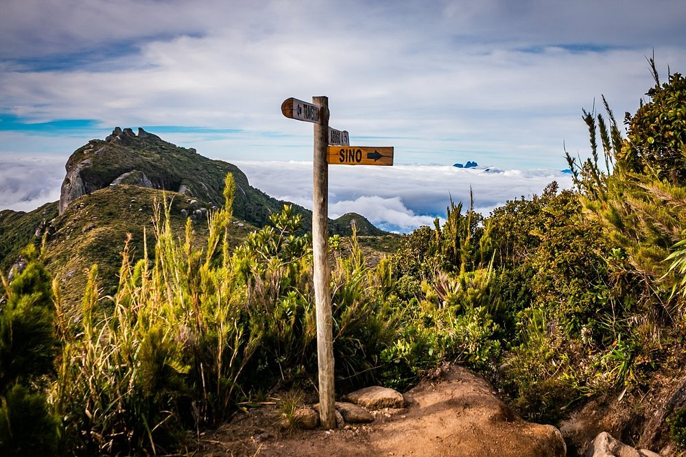
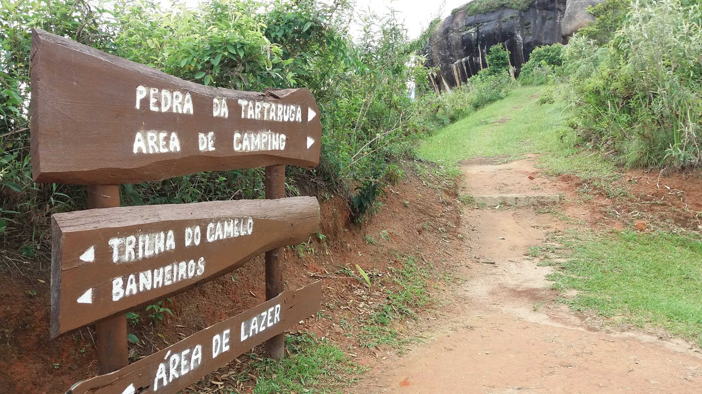
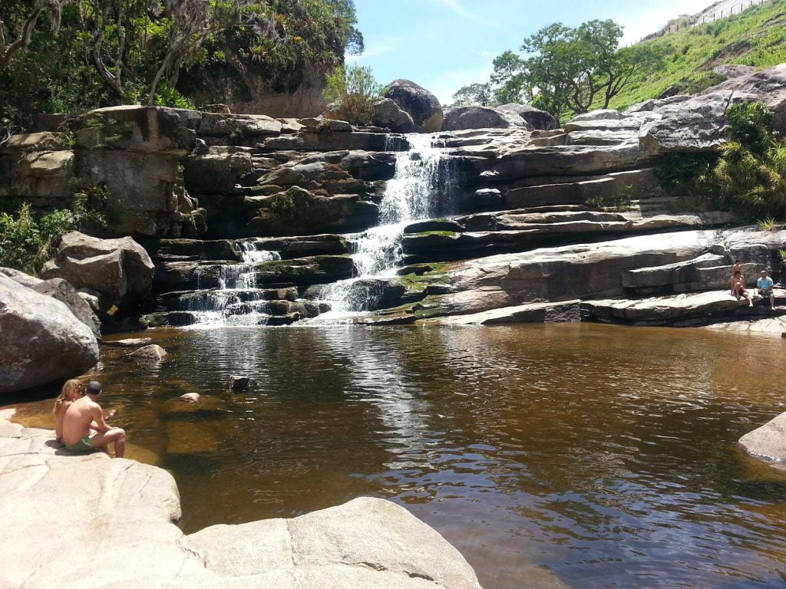
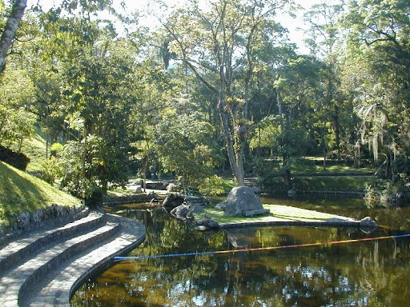
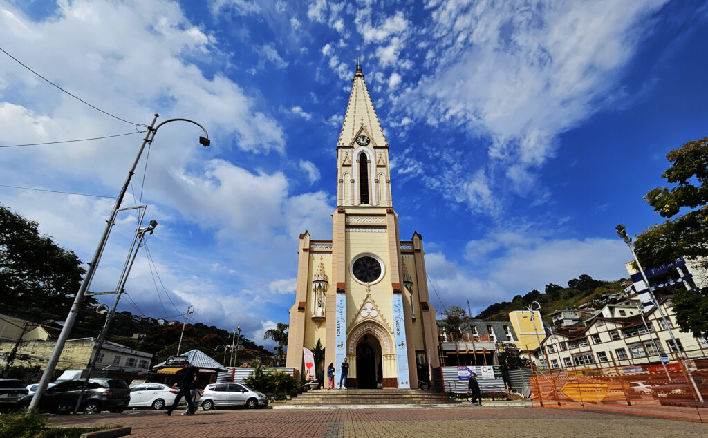

Pedra do Sino
📍 Teresópolis/Guapimirim - RJ
Trilha cercada por mata atlântica com vista panorâmica da serra.
Descubra paisagens incríveis, favorite locais e planeje sua próxima aventura.

📍 Teresópolis/Guapimirim - RJ
Trilha cercada por mata atlântica com vista panorâmica da serra.

📍 Teresópolis - RJ
Experiência intensa para aventureiros que buscam altitude e paisagens incríveis.

📍 Parque Natural
Um espaço silencioso e cercado pela natureza, ideal para relaxar e respirar.

📍 Teresópolis - RJ
Águas cristalinas e ambiente perfeito para descanso e contemplação.

📍 Parque Natural
Perfeito para um piquinique ou mergulho, além de contar com trilhas ao redor.

📍 Praça Principal
Um espaço rodeado de restaurantes e lojas com diversidades, e agora, conta com uma cafeteria local.